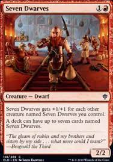

In Standard, you have a minimum 60 card deck with up to 4 of each card, unless it has an exception such as 7 Dwarves. you start with 20 life.
Modern has the same rules, although only cards from certain sets are allowed. you can see them here.
Image credit from Scryfall.com's card-searching API.